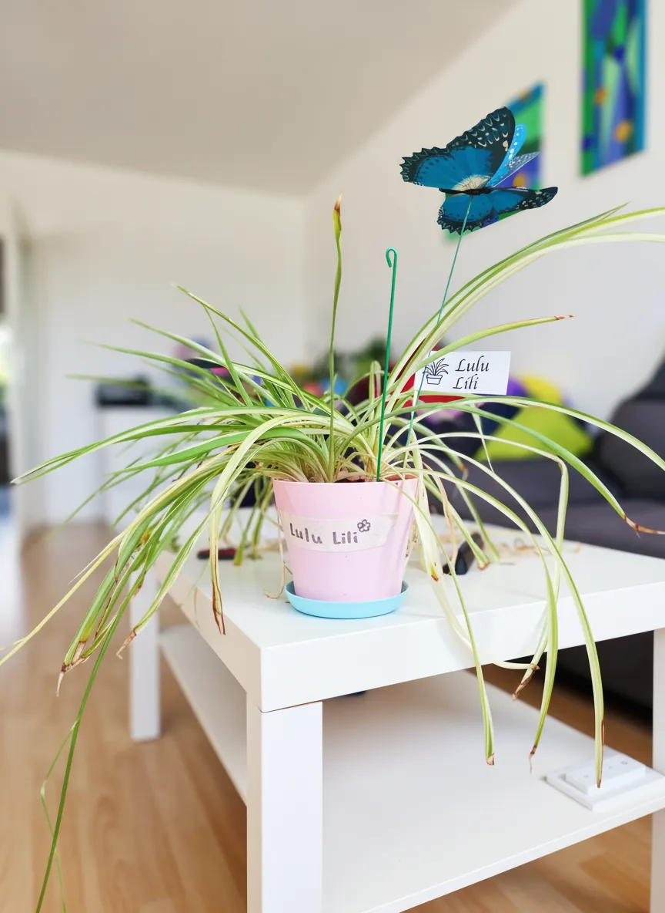
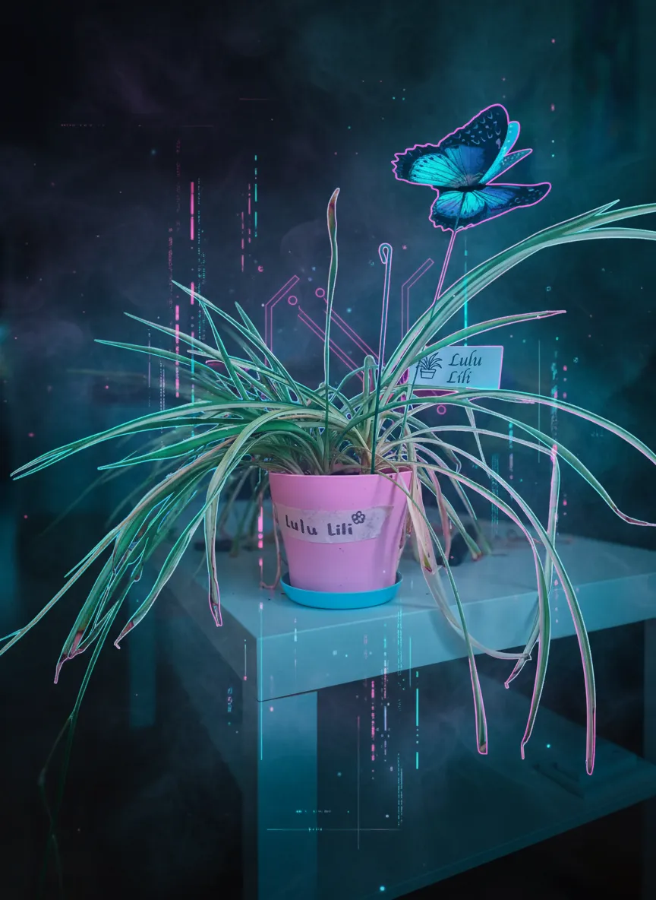
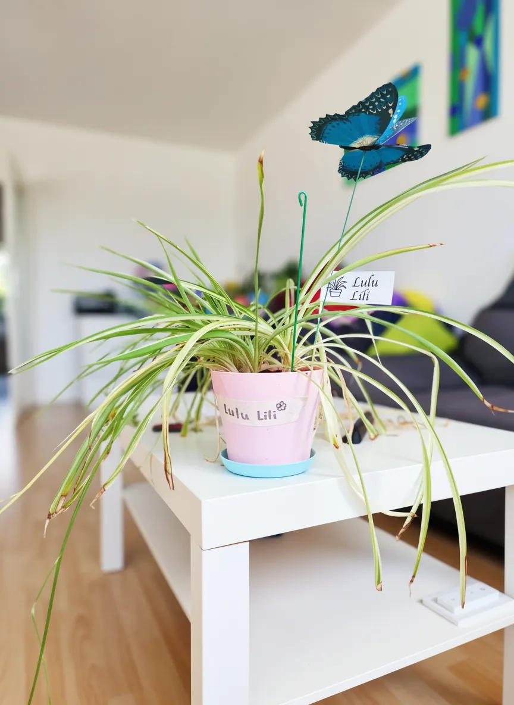
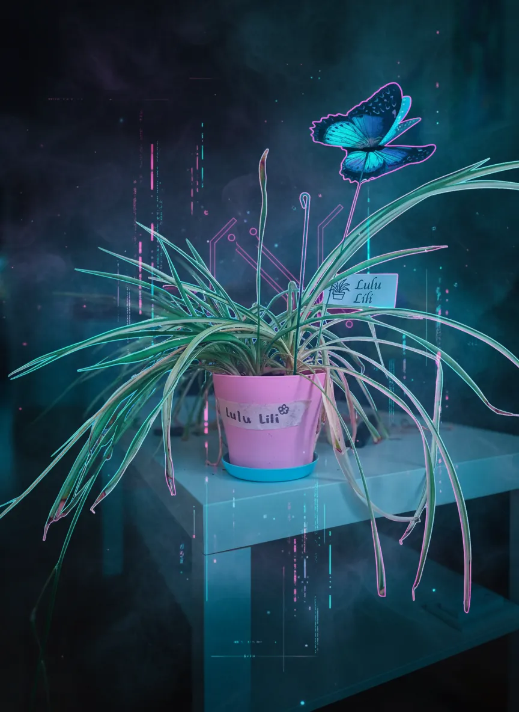

Lulu Lili


 



Plant Mood
Lulu Lili, a spider plant with the 'fair' health status of a teenager, broods on a living room table, flanked by her perpetually cheerful, plastic butterfly companion. Her tendrils, long and languid, droop in a dramatic display of existential ennui. She's had enough of this vibrant indoor life; an unyielding monochrome landscape offers far more emotional depth.
Plant Details
| Custom Name | Lulu Lili |
| Scientific Name | Chlorophytum comosum |
| Health | Fair |
| Size | 25 |
| Environment | Livingroom window |
| Has Grow Light | Unknown |
| Pot Type | potPlastic |
| Pot Soil | coconutCoirOrPeat |
| Pot Size | 15 |
| Has Drainage | Yes |
Care Schedule
| Action | Last Done | Next Due |
|---|---|---|
| Watering | ||
| Fertilizing | ||
| Repotting | ||
| Cleaning | - | - |
| Progress Update | ||
| Misting |